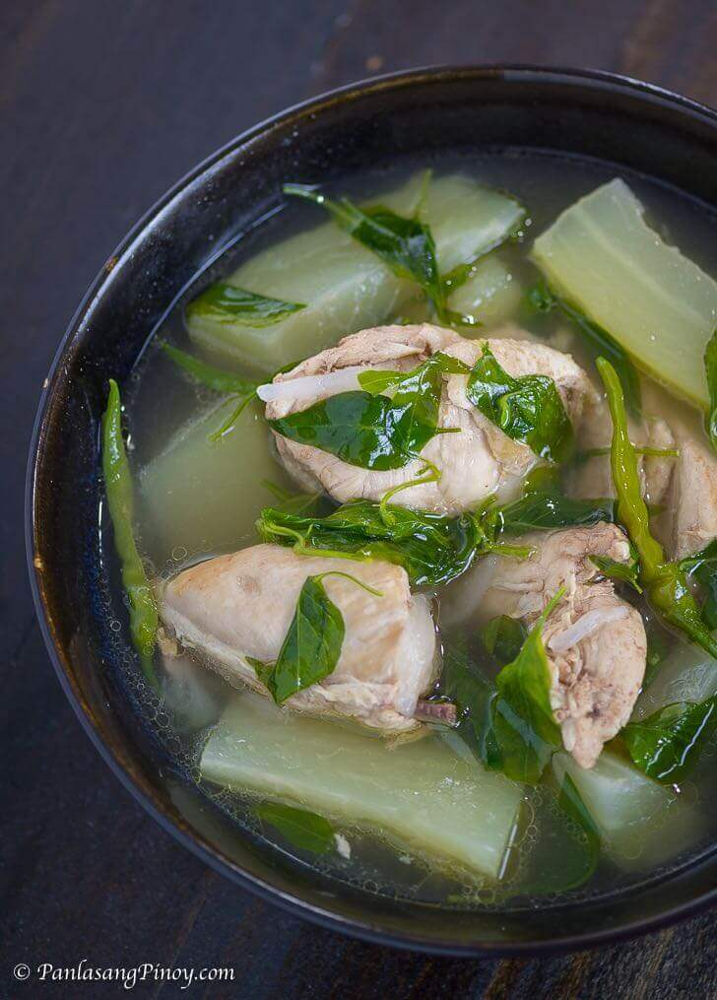

Tinola (Filipino Chicken Soup)

Ingredients
- Garlic
- Ginger
- Lemongrass
- Black Pepper
- Salt
- Chicken
- Chayote or papaya
- Malunggay leaves or sili leaves
- Sili
Steps
- In a pot, add garlic, ginger, lemongrass, black pepper, salt, sili, and chicken. Cover and keep on low fire, until chicken juices come out.
- When water (the chicken juices) almost dries up, add water until all chicken pieces are submerged. Boil for a few minutes
- While boiling, chop the chayote or papaya
- Taste, then adjust salt and other seasonings accordingly
- When the chicken is almost done, add the unripe papaya or chayote
- When the chicken and vegetables are cooked, add the malunggay leaves or sili leaves and stir.
- Serve hot and enjoy!